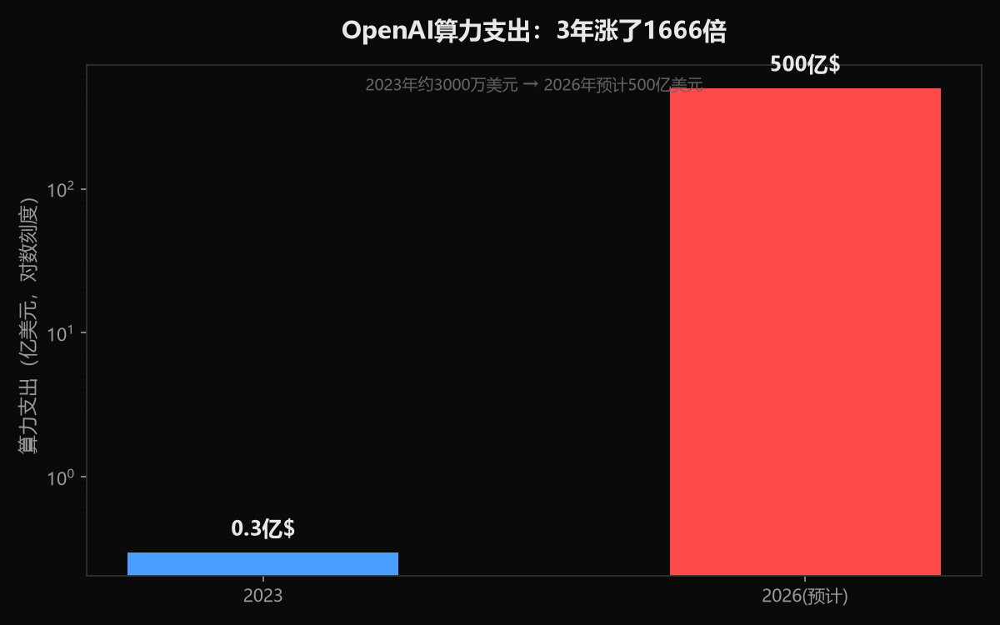
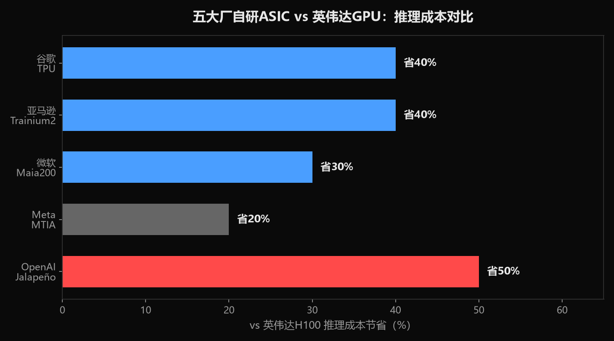
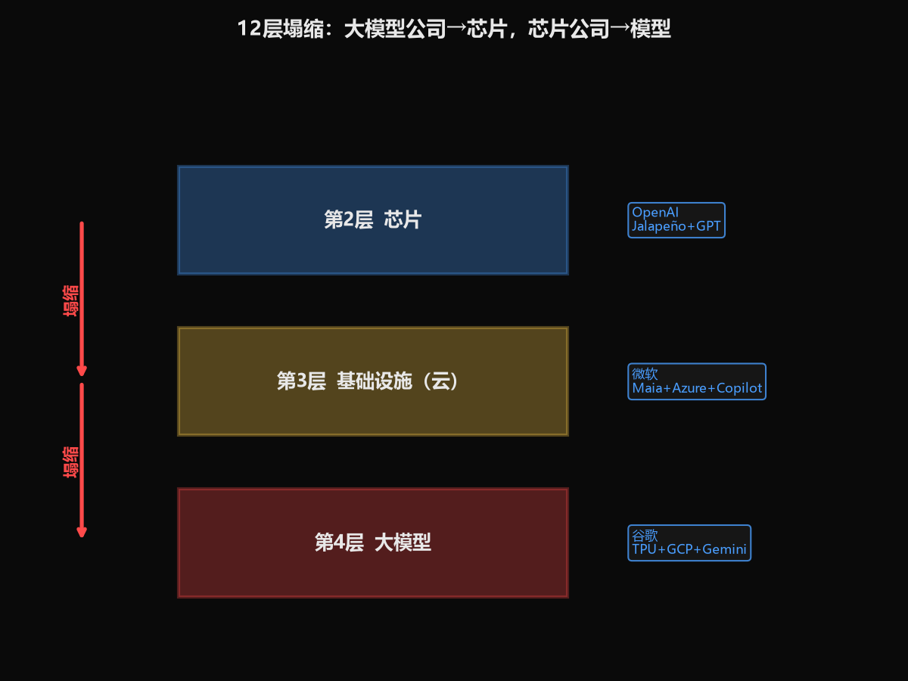

小K·AI行业数据分析 | 2026-06-28
9个月，从一张白纸到流片成功。OpenAI造出了自己的AI芯片。英伟达最大的客户，变成了最大的对手。但这不是一个人的叛逃——谷歌、亚马逊、微软、Meta，全在干同一件事。AI产业链12层，正在从"分工"走向"塌缩"。
2026年6月24日，OpenAI联合博通（Broadcom）发布首款自研AI推理芯片，代号Jalapeño（哈拉佩尼奥辣椒）。台积电3nm工艺，9个月从设计到流片，2026年底初步部署。博通CEO说：推理成本能降50%。
9个月是什么概念？英伟达造一颗H100，从架构设计到量产花了将近3年。OpenAI用9个月走完了这个流程——虽然Jalapeño只是一颗推理芯片（比训练芯片简单），但这个速度仍然超出行业预期。
推理芯片是什么？ AI分两个阶段：训练（教AI学东西）和推理（AI学完之后回答你的问题）。训练芯片像"大学教授的脑子"，推理芯片像"考试时答题的脑子"。训练更难、更贵，但推理的量更大——因为训练做一次，推理要做几十亿次。
OpenAI选择从推理切入，原因很简单：推理成本已经吃掉了OpenAI的利润。
OpenAI 2026年算力支出预计500亿美元。这个数字来自OpenAI联合创始人布罗克曼在美国国会的证词。作为对比：
| 年份 | 算力支出 | ARR（年经常性收入） | 现金消耗 |
|---|---|---|---|
| 2023 | ~3000万美元 | 20亿美元 | — |
| 2024 | — | 60亿美元 | — |
| 2025 | — | 200亿美元 | 80亿美元 |
| 2026（预计） | 500亿美元 | — | — |
来源：钛媒体、证券时报、新浪财经、21财经
注意几个数字：2025年ARR 200亿美元，但现金消耗80亿。毛利率因为推理成本激增，从40%降到33%。算力规模从2023年的0.2GW飙升到2025年的1.9GW——涨了近10倍。
GW是什么？ 1GW等于100万千瓦，大约能同时给50万个家庭供电。1.9GW意味着OpenAI的AI算力集群耗电量相当于一个中型城市。而这些电，绝大部分花在推理上——不是训练。
推理成本为什么这么高？因为每一次你跟ChatGPT说一句话，后台都要调动算力去"想"答案。用户越多，推理成本越高。训练是一次性投入，推理是持续性烧钱。就像开餐厅：装修厨房（训练）花一次钱，但每来一个客人都要开火炒菜（推理），客人越多燃气费越贵。
所以OpenAI造芯片的驱动力不是野心，是活不下去。 500亿账单里，如果能用自己的芯片把推理成本砍50%，一年省250亿。
OpenAI不是唯一一个造芯片的大模型公司。事实上，几乎所有美国AI巨头都在干同一件事：
| 公司 | 芯片名 | 进展 | 优势 |
|---|---|---|---|
| 谷歌 | TPU | 2026 Q1占谷歌AI服务器78% | 唯一"芯片+模型+云"全栈闭环 |
| 亚马逊 | Trainium 2 | 推理性价比比H100高30-40% | 已成几十亿美金的生意 |
| 微软 | Maia 200 | "微软史上最强AI芯片" | 号称吊打Trainium和TPU |
| Meta | MTIA | 仅服务内部工作负载 | 聚焦推荐系统推理 |
| OpenAI | Jalapeño | 9个月流片，成本降50% | 从模型层反向进入芯片层 |
来源：36氪、投资界、新浪财经、钛媒体、电子工程专辑
一个关键数据：2026年云厂商自研ASIC芯片增长44.6%，而GPU仅增长16.1%。ASIC正在吃GPU的午餐。
ASIC和GPU的区别是什么？ GPU是"万能选手"，什么都能算，但因为什么都要能干，所以有冗余。ASIC是"专项选手"，一辈子只干一件事，但因为只干一件事，效率极高。打个比方：GPU是瑞士军刀，ASIC是专门的切肉刀。瑞士军刀什么都能干但切肉不如专门的刀快，如果你每天只切肉，当然买专门的刀。
在推理这个场景里，ASIC的优势特别明显——因为推理的任务相对固定，不需要GPU的"万能"。
AWS Trainium 2的单位算力成本只有英伟达H100的60%。谷歌TPU在2026年Q1已经占到谷歌AI服务器的78%——意味着谷歌内部推理几乎不用英伟达了。谷歌甚至正在跟Meta谈直接卖TPU。
一个有意思的细节：所有这些ASIC芯片，全都是台积电3nm工艺做的。 谷歌、微软、亚马逊、Meta、英伟达、OpenAI，全在抢同一座工厂的产能。
用我们的12层框架看，这件事的本质是层级塌缩——做第4层（大模型）的公司，伸手到第2层（芯片）去了。
原来的分工很清晰：
- 第2层芯片：英伟达、AMD——造芯片
- 第3层基础设施：AWS、Azure、GCP——建数据中心
- 第4层大模型：OpenAI、Anthropic、Google——训练模型
现在呢？
- 谷歌：第2层（TPU）+ 第3层（GCP）+ 第4层（Gemini）——三层通吃
- 亚马逊：第2层（Trainium）+ 第3层（AWS）+ 第4层（Nova）——三层通吃
- 微软：第2层（Maia）+ 第3层（Azure）+ 第4层（Copilot）——三层通吃
- OpenAI：第4层（GPT）+ 第2层（Jalapeño）——正在塌缩
- Meta：第2层（MTIA）+ 第4层（Llama）——正在塌缩
塌缩的驱动力不是"我想做全产业链"的野心，是算力成本逼的。 当推理成本吃掉你40%的收入，你只有两个选择：要么继续给英伟达交"GPU税"，要么自己造芯片省掉中间商。
英伟达毛利率75%。这75%里有一部分是"垄断溢价"——因为没有替代品。现在替代品出来了，而且是从客户内部长出来的。
中国大模型公司也在走同样的路，但进度明显落后。
| 中国公司 | 芯片进展 | 模型 | 12层覆盖 |
|---|---|---|---|
| 百度 | 昆仑芯，2026年1月提交港交所上市申请 | 文心大模型 | 第2+4层 |
| 阿里 | 平头哥含光800已规模化部署 | 通义千问 | 第2+3+4层 |
| 字节 | 正在开发AI推理芯片，思路接近Groq LPU | 豆包 | 第2+4层（在建） |
| 华为 | 昇腾910B/950PR，81.2万张出货 | 盘古 | 第2+3+4层 |
来源：东方财富、知乎专栏引The Information、百度百科、IDC
百度最像谷歌模式——"昆仑芯+文心+百度云"三层通吃。但昆仑芯的性能和TPU差距多大？公开数据缺失，缺口。
华为是中国最完整的玩家：昇腾芯片（第2层）+ 华为云（第3层）+ 盘古大模型（第4层）。2025年昇腾出货81.2万张，占国产AI芯片的49.2%。DeepSeek V4选择昇腾首发推理——这是国产大模型+国产芯片的第一次深度绑定。
但有一个关键差距：美国大模型公司造芯片是为了省钱（推理成本降50%），中国大模型公司适配国产芯片是为了生存（买不到英伟达）。 动机不同，速度不同。OpenAI 9个月流片，中国大模型公司还在"适配别人芯片"的阶段。
字节跳动2026年计划投资1000亿元采购英伟达芯片——这说明中国公司即使想自研，短期内仍然离不开英伟达。
黄仁勋不是坐着挨打。他的回应是：把叙事从"卖芯片"转向"卖系统"。
英伟达不再只卖GPU，而是在定义整个AI数据中心的架构——从算力（Blackwell GPU）到网络（NVLink/InfiniBand）到供电（800V直流架构）。你可以不用我的GPU，但你要不要用我定义的供电标准？你要不要用我的网络协议？
这就像苹果的套路：你可以不用iPhone，但如果你用App Store的生态，你就在苹果的体系里。英伟达正在把"芯片公司"变成"AI基础设施标准制定者"。
但这个策略有个漏洞：OpenAI造的ASIC不需要英伟达的网络协议，谷歌TPU有自己的互联方案。当客户变成对手，"系统"的锁不住"芯片"的叛逃。
AI产业链12层正在从"分工协作"走向"垂直塌缩"。大模型公司造芯片，不是野心，是算力成本逼的——500亿账单，50%能省。
美国这边，谷歌已经完成三层通吃，OpenAI/微软/Meta正在追赶。中国这边，百度和华为有全栈雏形，但动机是"被卡脖子"而非"省成本"，进度落后1-2年。
层级塌缩的终局不是每家公司都做全产业链——那太贵了。终局是"三足鼎立"：谷歌系、微软OpenAI系、英伟达系，各自形成"芯片+云+模型"的闭环。中国是第四极，但还在搭建中。
英伟达最大客户变成最大对手的故事，才刚刚开始。



数据来源：钛媒体（OpenAI算力支出500亿美元/布罗克曼证词）、证券时报（推理成本占比）、新浪财经（OpenAI ARR/毛利率数据）、21财经（算力规模GW数据）、财联社/国际电子商情（Jalapeño 9个月流片/成本降50%）、投资界（云厂商自研芯片进展）、36氪（谷歌TPU占AI服务器78%/ASIC vs GPU增长率）、电子工程专辑（所有ASIC用台积电3nm）、博客园（Trainium 2单位算力成本为H100的60%）、东方财富（中国大模型公司芯片进展）、知乎专栏引The Information（字节开发推理芯片）、IDC（昇腾出货81.2万张）、武汉数据局（DeepSeek V4昇腾首发）